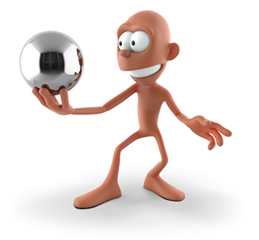
根据物理定律设计材质可大大简化着色和照明，即使在没必要追求真实感或物理准确性时也是如此。通过了解和应用一些法则，我们可以让图像更真实可信，并创建在不同照明设置下表现更可预见的材质。
在现代渲染器中，基于物理的渲染是指能量守恒、物理上合理的散射以及材质分层和线性颜色空间之类的概念。Arnold 是基于物理的渲染器，但是如果需要，它也允许打破规则，创建出不符合物理定律的材质和灯光。在本文档中，我们将介绍基础理论，以及如何设置着色器来遵循这些法则。
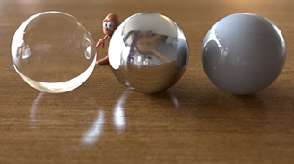
Arnold 支持各种第三方应用程序，如 Substance Painter。
在渲染中，我们会模拟光子从光源发出，经过空气传播，在表面上和体积中反弹，最终落在摄影机的传感器上。数以百万计的光子在摄影机传感器上组合在一起，就形成了渲染的图像。
这意味着，从物理角度来说，曲面着色器描述了曲面如何与光子相互作用。击中物体的光子可能会被吸收、在曲面发生反射、透过曲面发生折射，或者在物体内部四处散射。这些组件组合在一起，就产生了种类众多的材质。
除非物体是发射光子的光源，否则它无法返回比入射光所贡献的更多的能量。材质要做到能量守恒，离开表面的光子数量应小于或等于入射光子的数量。如果材质不是能量守恒，看起来会过于明亮，渲染时噪波也会增多，特别是在使用全局照明时。
要使材质保持能量守恒，材质组件的权重和颜色绝不能超过 1。另外，必须注意确保所有组件合在一起是能量守恒的，这一点我们稍后会详细介绍。
| 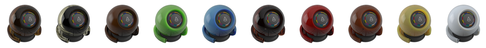 |
从微观层面看，物体表面的细节是错综复杂的。在渲染时，我们不使用几何体来表现所有这些细节，而是使用统计模型，这类模型具有易于理解的参数。
Arnold 的 standard_surface 着色器在为物体建模时会建立一个或两个镜面反射层，以及一个漫反射或透明内部。这种模型可以表示众多材质。下面我们来看一下各个组件。
首先来看漫反射内部。入射的光子将进入物体，在内部四处散射，然后被吸收或在另一位置离开物体。
如果光子散射很多次，我们会得到一个漫反射外观，这是因为光子从很多不同位置沿不同方向离开曲面。对于像皮肤这样的材质，光子可以在曲面之下散射得相对较远，因此呈现出非常柔和的外观，这种效果使用次表面散射来渲染。对于原木这样的材质，光子不会散射得很远，因此呈现出更坚硬的外观，这种效果使用漫反射进行渲染。对于像叶子这样的纤薄物体，光子可以一直散射到物体的另一面，这种效果以漫反射 SSS（启用 thin_wall）形式进行渲染。
请注意，尽管我们在着色器中为所有这些类型的材质提供了单独的控制选项，但是从根本上讲，它们背后的物理机制是相同的。
漫反射内部对材质整体颜色的影响通常也是最大的。每个光子都有一个关联的波长，并且根据材质的特性，某些波长的光子比其他光子更有可能被吸收。反过来就意味着，某些波长的光子更容易离开曲面，从而使曲面呈现彩色外观。
| 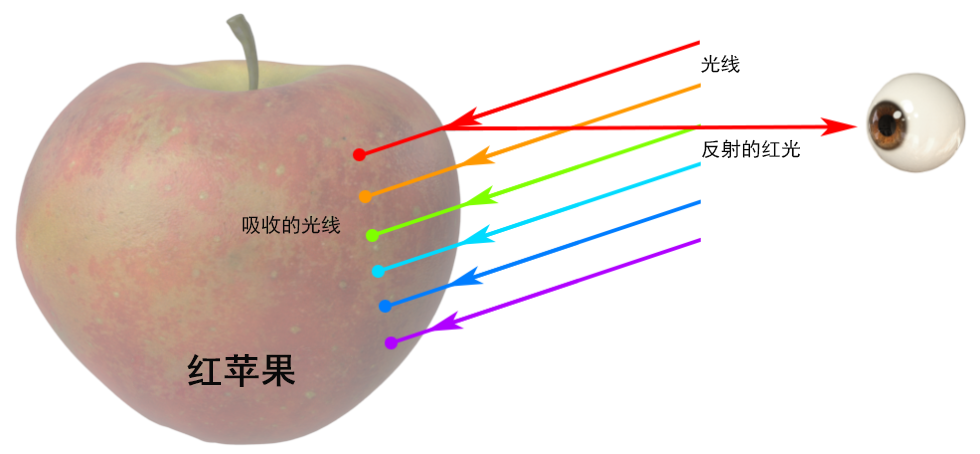 |
| 红色苹果的表皮主要反射红光。只有红色波长的光才会散射出苹果皮外面，其他的光则会被吸收。 |
单个光子只能参与漫反射、次表面散射和背面照明*这几个组件中的一个，为了实现物理上的正确性，我们不希望离开表面的光子比进入的光子多。对于 *standard_surface 着色器，会自动确保这些组件的总和不高于 1。
| 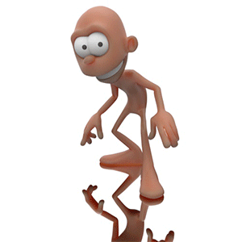 |
| _specular_roughness_：0 到 1 |
镜面反射层使用微面分布进行建模。我们假设曲面是由许多沿随机方向排列的微小的面构成。粗糙度低的曲面（如镜面）上各个微面之间几乎没有变化，因此呈现清晰锐利的反射。粗糙度高的曲面存在很多变化，因此呈现更柔和、富有光泽的反射。
| 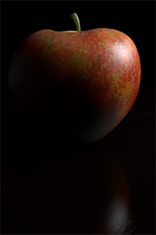 |
| 苹果上可见强烈的镜面反射_高光。注意，桌子的_镜面反射_宽泛而暗淡（因为 _specular_roughness 值较高）。 |
| 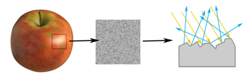 |
| 散射光线引起的粗糙反射 |
| 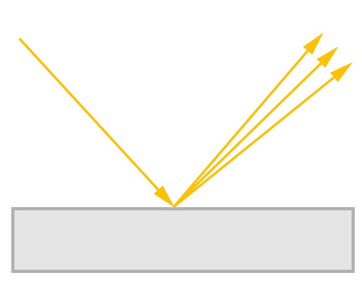 | 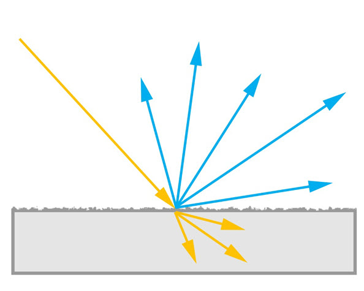 |
| 光泽曲面。入射角和反射角相等。 | 漫反射曲面。光线方向随机变化。 |
要查看曲面高光的变化，应将贴图连接到 _specular_roughness_。这不仅会影响高光的亮度，还会影响其大小和环境反射的清晰度。
| 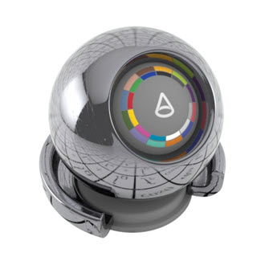 | 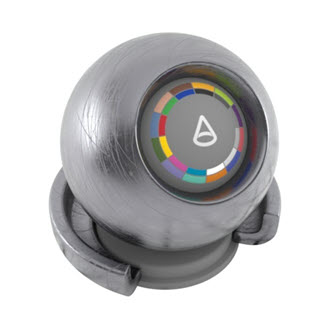 |
| 低 specular_roughness | 高 specular_roughness |
| “划痕”(Scratches)纹理 -> specular_roughness_（通过 _range 着色器） |
光子不仅可以在曲面上发生反射，还可以透过曲面发生折射。光子将穿过镜面反射层，通常在离开该层的另一面时改变方向，具体取决于折射率 (IOR)。
如果曲面的内部是透明的（如透明玻璃内部），光子将可以穿过物体并从另一面射出。如果为漫反射内部，光子可以在物体内部散射，然后被吸收或再次离开物体。镜面反射层的折射率越高，下面的漫反射内部越清晰可见。对于金属这样的材质，穿过镜面反射层发生折射的光子往往会立即被吸收，因此我们看不到漫反射内部。
镜面反射层反射或折射的光子的百分比与视角有关。从正面观察曲面时，大多数光会发生折射；以一定掠射角观察曲面时，大多数光会发生反射。这种现象称为“菲涅尔效应”。折射率控制着此效应具体如何随视角发生变化。
| 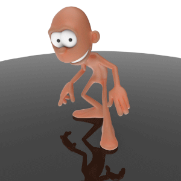 |
| 镜面反射 BRDF 相对于视角方向发生的变化 |
对不透明度最好的理解是：不透明度是一种使用纹理为曲面几何体建模的方法。它不影响光子与曲面的相互作用，而是指示哪个位置不存在曲面几何体、光子可以直接通过。
| 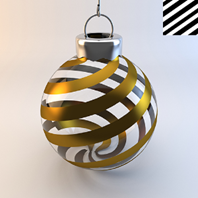 |
| 渐变纹理 -> 不透明度 |
不透明度的一个典型用途是创建精灵类型的效果，比如使用一张多边形卡片裁切出树叶形状，或者使发束末端变得透明。但需要注意的是，包含许多不透明度精灵（例如树叶）的场景可能会使渲染速度显著下降。
| 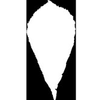 | ||
| 叶_“不透明度”(Opacity)_：启用 | 叶_“不透明度”(Opacity)_：禁用 | Alpha 贴图 -> 不透明度 |
透射深度与此类似，但它控制的不是表面，而是物体内部的密度。体积密度越高，在光子通过内部时吸收的光子越多，因此物体越厚就越暗。
| 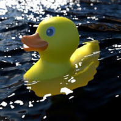 | 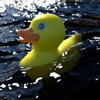 |
| _transmission_color_：白色 | _transmission_color_：浅蓝色 |
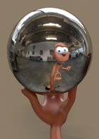
由 Daniel M. Lara 制作的 Pepe 模型 (Pepeland)。